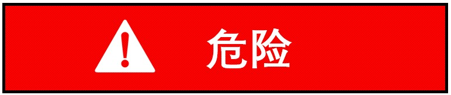
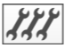

维护信息
目的
本手册旨在为 JFY_BFC 激光切割机的维护提供说明和指南。它涵盖了日常维护任务、故障排除程序以及确保激光切割机最佳性能和使用寿命的最佳实践。
正确的维护对于保持机床的功能性和安全性至关重要。它可以防止操作故障及其后果。

机床开机状态下进行维护工作有致命伤害的风险！
-
除非另有明确说明：关闭机床的主开关以及相应组件的主开关。
-
锁定主开关并拔出钥匙。
机床投入使用前
机床在投入使用前必须严格按照润滑图表进行润滑。如果机床长时间未使用（例如海外运输），则必须检查机床的全部润滑情况。如有必要，必须将所有润滑点和供油管路中的胶化油脂彻底清除。
经过培训的人员确保操作安全
某些维护工作包括确保操作安全的目视检查。这些目视检查只能由经过适当培训的人员执行。
维护人员
用户必须授权维护人员对机床进行维护工作。
根据标识，维护工作必须由下表中指定的人员完成：
| 标志 | 维护人员 |
|---|---|
|
机床操作员 |
经过培训的维护人员：
|
|
 |
技术服务： 此维护工作只能由 JFY 的技术服务部门执行。 |
清洁注意事项
-
整个系统应定期清洁。
-
用刷子刷去大块污垢和灰尘，或使用工业吸尘器清除。
润滑注意事项
有关机床润滑，请参阅润滑示意图和维护说明。还应注意以下几点：
-
加油口和排油口盖不要打开超过必要时间，并保持清洁。
-
仅在工作温度下排放废油。
-
仅使用无绒清洁布和低粘度主轴油（"清洗油"）清洁油腔和润滑点。不要使用清洁棉、煤油或苯。
-
不要将合成润滑油与矿物油或其他制造商的合成油混合，即使该合成油具有同等性能。
-
妥善处理废油。